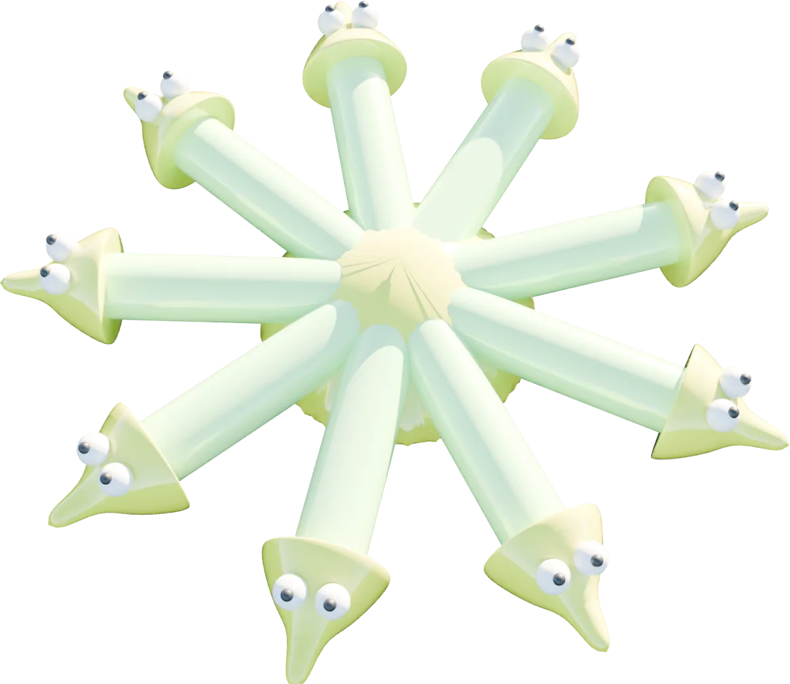
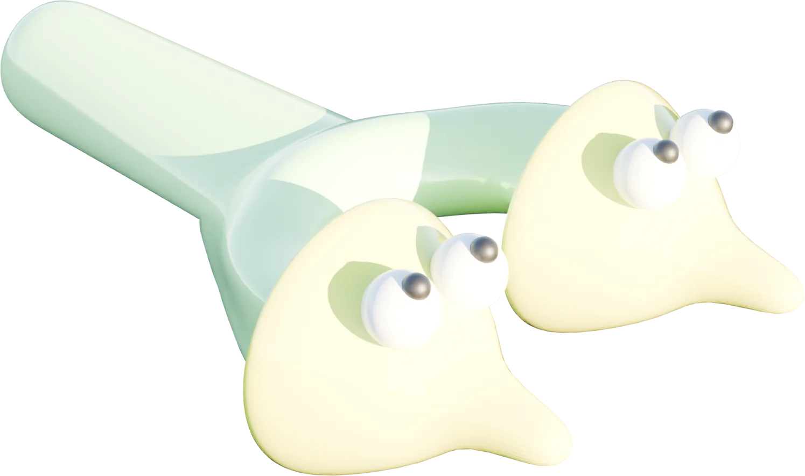
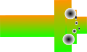
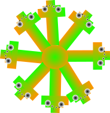

Characters
Threnemy
A wave of three, launched from a spinning wheel.
Behavior
The Threnemy, also called a Tak, is the third enemy in the original game and MMORP 3D’s classic mode. A spinning wheel sends Taks out in waves of three.
In the original game, they travel toward the position MMORP occupied when they began moving, at varying speeds. In MMORP 3D, some have a limited ability to turn.
Variants and relatives
A rare two-headed version appears in MMORP 3D. Threnemies are related to Helpers, though the two make very different first impressions.
Gallery




KEEP EXPLORING